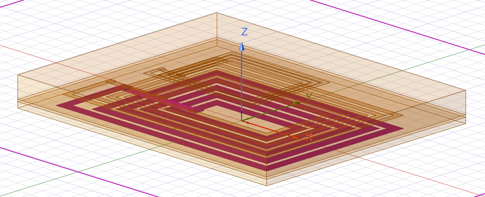

Graduate student lead: Anthony Agnew · Faculty advisor: Prof. Arash Kheradvar · UCI Samueli School of Engineering
Approximately one in four individuals will develop heart failure (HF) in their lifetime, with HF accounting for an estimated $32 billion in direct medical costs in the US. One solution is left ventricular assist devices, but they use drivelines that pierce the abdomen, which often become infected.
This project will utilize wireless power transfer (6.78 MHz) across tissue to develop a cardiac assist device that is fully implantable, removing that driveline. Our lab has already developed the basic framework (45% DC-to-DC efficiency, with coil Q-factor of ~10), but we still need help answering a hard question. Can relay-coils and custom-designed coils lead to greater efficiency and misalignment robustness while ensuring that thermal generation and electromagnetic interference (EMI) do not exceed unsafe levels? The project will be interdisciplinary, covering mechanical design, electrical RF power transfer, medical-regulatory compliance, and statistical analysis for experimental design.
The undergraduates will design a set of coils to improve Q-factor from 10 to 50, determine if or how many relay coils to use, design and 3D print a 6-axis misalignment test jig, and validate the project for thermal/EMI safety. The project will be presented at the May Symposium and integrated into a future paper for a driveline-free cardiac support device.

| Person | Owns | Skills gained |
|---|---|---|
| Undergrad 1 | Coil design, Q-factor, thermal validation | RF design, KiCad, VNA, regulatory testing |
| Undergrad 2 | Misalignment jig and DOE, relay coils (n-coils), EMI | SolidWorks, design of experiments, statistics, BME safety |
| Grad lead | Experimental design, integration, safety, statistics | Mentoring, project management |
| Faculty advisor | Oversight, lab resources, approvals |
Mentoring will follow a learning-first approach with emphasis on the theoretical models behind electro-mechanical design. Weekly team meetings are used to foster collaboration, and weekly one-on-ones provide guidance. Students will set major goals within the first week, then complete a mid-point review in March and a final reflection in May. Each student will bring a physical lab notebook to check-ins to present data, showcase reflections, and plan the upcoming week against their original goals. Students will be taught through a skill ladder (watch, then together, then alone, then teach the other student), will be fully trained by Feb. 1, and will present at the May symposium.
| Date | Milestone |
|---|---|
| Jan 16 | Students onboarded (lab safety, basic tools and setup); start researching coil designs. Misalignment jig designed in CAD; Coil V1 ordered. |
| Feb 15 | Coil V1 received, Q measured loaded and unloaded; jig printed. Coil V2 based on V1 data; 2-coil vs. multi-coil at nominal alignment. |
| Mar 13 | Q target (≥50) reached; n-coil comparison finished. Misalignment matrix (25°, 2.5 cm lateral, 3 cm vertical); winter progress report. |
| Apr 10 | EMI testing (atrial detection, inhibition, Bluetooth) at 10 W. |
| May 1 | Thermal testing finished (≤2 °C over 90 min at ≥10 W). |
| May 30 | Analysis finished; coil design and n recommendation delivered to the lab; final report and presentations. |
Approximately one in four individuals will develop heart failure (HF) in their lifetime, with HF accounting for an estimated $32 billion in direct medical costs in the US [1]. Heart transplantation increased by over 100% from 2012 to 2023 with more than 4,500 hearts annually, yet growth remains insufficient for demand [2][3]. One solution to this pressing need for advanced therapeutic treatment is durable left ventricular assist devices (LVADs), with ~2,500 implanted in 2022 [4]. However, drivelines are prone to infection; one option is to remove the driveline to have a fully implantable LVAD, wherein wireless power transfer (WPT) occurs across the abdomen [5][6][7].
Will using relay coils and custom-designed coils lead to greater efficiency and misalignment robustness? Will hardware improvements ensure that thermal generation and electromagnetic interference do not exceed unsafe levels?
| Metric | Current baseline | Target |
|---|---|---|
| Coil efficiency | ~60% | >80% |
| Coil Q-factor | 10 | 50 |
| n-coils | n = 3 | Test n = 2, 3, 4 and pick the best |
| Thermal | <2 °C at steady state, 5 W received | <2 °C at steady state, 10 W received |
| EMI | Poor atrial detection | 100% atrial event detection |
| Misalignment | Efficiency drop <15% for 15° rotation on all axes, 2.5 cm lateral, 1 cm vertical | Efficiency drop <10% for 25° rotation on all axes, 2.5 cm lateral, 3 cm vertical |
Our lab has created a basic framework using off-the-shelf components that may be built upon. We can convert 12 W DC, continuously transfer power across tissue, and receive 5.5 W DC at the battery. Unfortunately, system efficiency remains low (45%) compared to the existing literature (≥85%), and the system produces EMI.
The undergraduates will design a set of coils that increase our Q-factor from 10 to 50, as measured by a VNA at 6.78 MHz, using multiple design levers: conductor type, turn spacing, coil diameter, and turn count. These coils, along with the addition of relay coils (n-coils), will be tested for Q-factor, DC-to-DC efficiency, and coil-to-coil efficiency (≥80%). The undergraduates will design and 3D print a 6-axis misalignment jig that allows defined lateral (0–2.5 cm), vertical (0–3 cm), and angular (0–25°) offsets. EMI will be tested on the final configuration using our Raspberry Pi atrial-signal simulator feeding a Medtronic dual-chamber temporary pacemaker, with WPT at full power and Bluetooth telemetry active. Results will be measured on an oscilloscope over ≥100 beats to detect inhibition and validated against ISO 14117. Thermal safety will be validated as a temperature rise ≤2 °C in ex vivo porcine tissue at ≥10 W power transfer, in a warm-air oven at 38 °C, using fiber-optic probes at the receiver surface and inside the tissue.
Backup plans are prepared. If Q = 50 is not achieved, we will replicate coils from other laboratories or continue using off-the-shelf coils. If choosing the number of coils becomes unwieldy, a standard 2-coil design may be used. EMI and thermal protocols have previously been conducted by the lab. A statistical analysis including DOE and gauge R&R will determine our variances and define the reliability and reproducibility of our setup.
This project spans hardware electronics (coil and relay design), mechanical design (misalignment jig), statistics (DOE and gauge R&R), and medicine and safety (thermal limits, EMI). These fields are interlocked and often carry competing design interests; for example, increasing the number of relay coils will generally increase overall efficiency but may decrease reproducibility and carry greater safety risks.
Students will create a reusable n-coil WPT architecture with custom coil Q = 50 and ≥80% coil-to-coil efficiency, validated for reliability across 6-axis misalignment and for thermal and EMI safety. The students’ work will be presented at the May symposium and integrated into a future paper on the lab’s driveline-free cardiac support device.